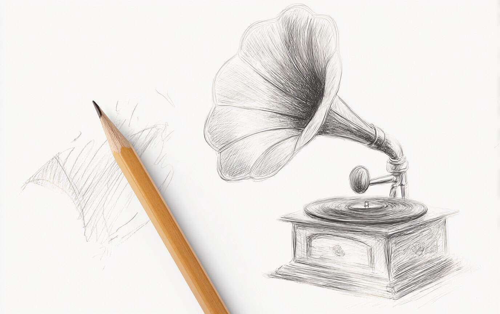
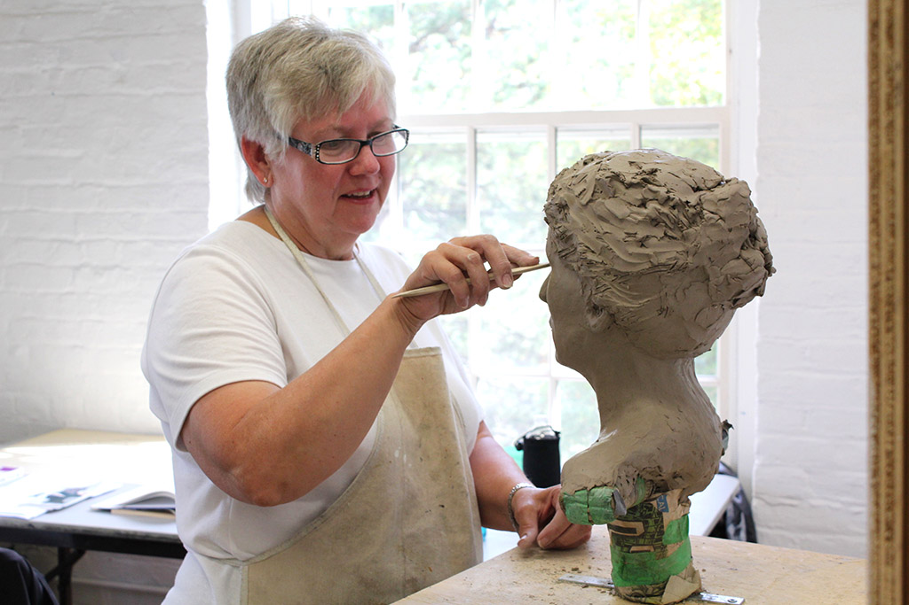
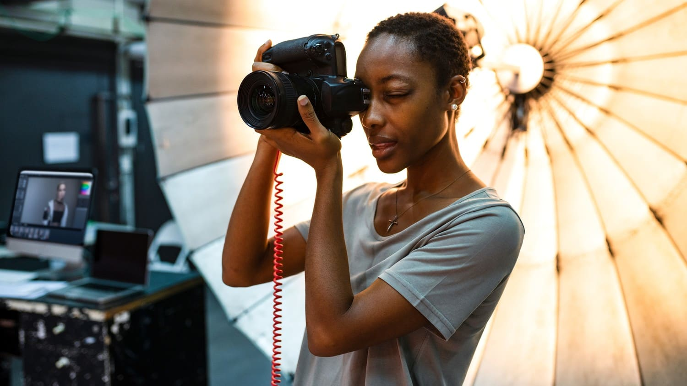
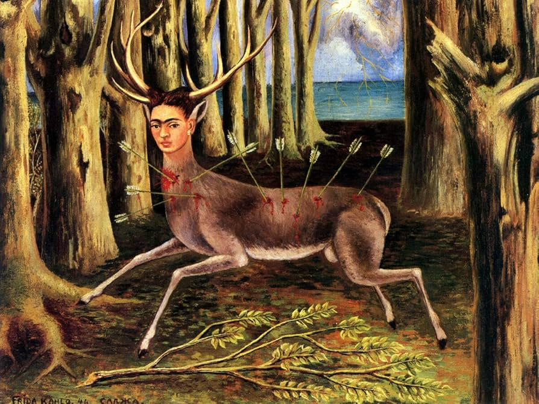
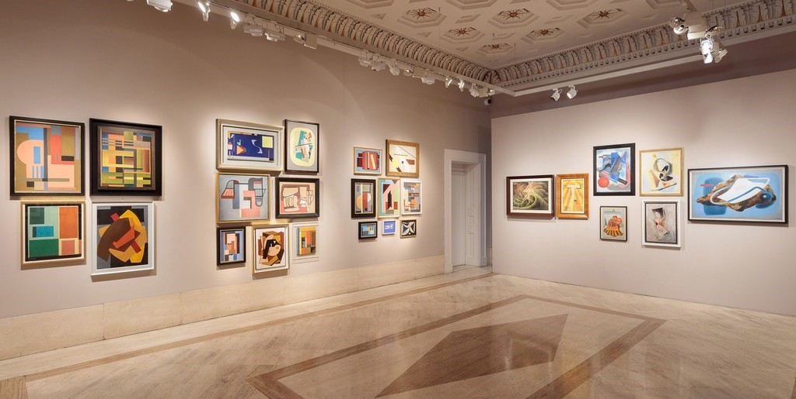

نقاشی مدرن
۲۵ خرداد ۱۴۰۳
بررسی تکنیکهای نوین در نقاشی آبستره
در این مقاله به بررسی جدیدترین تکنیکهای نقاشی آبستره میپردازیم.
ادامه مطلبدر اینجا میتوانید جدیدترین مقالات، تحلیلها و مطالعات هنری را بخوانید. از تکنیکهای نقاشی مدرن تا تحلیل آثار کلاسیک، همه چیز در مورد هنر.

نقاشی مدرندر این مقاله به بررسی جدیدترین تکنیکهای نقاشی آبستره میپردازیم.
ادامه مطلب
مجسمهسازیبررسی استفاده از مواد جدید و تکنولوژیهای دیجیتال در خلق آثار مجسمهسازی معاصر.
ادامه مطلب
عکاسی هنریچگونه میتوان با عکاسی مفهومی پیامهای عمیق و داستانهای شخصی را به تصویر کشید؟
ادامه مطلب تکنیکهای طراحی
تکنیکهای طراحی
از سایهزنی تا تنالیته، در این مقاله بهترین تکنیکهای طراحی پرتره را به شما آموزش میدهیم.
ادامه مطلب
تحلیل آثاربررسی نمادها و المانهای به کار رفته در آثار فریدا کالو و ارتباط آنها با زندگی شخصی این هنرمند.


نمایشگاههاگزارشی کامل از آثار برجسته، هنرمندان حاضر و رویدادهای جانبی نمایشگاه بینالمللی هنر معاصر.
ادامه مطلب